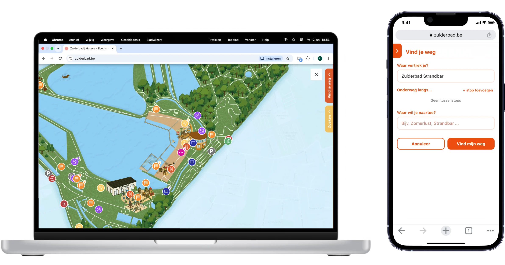
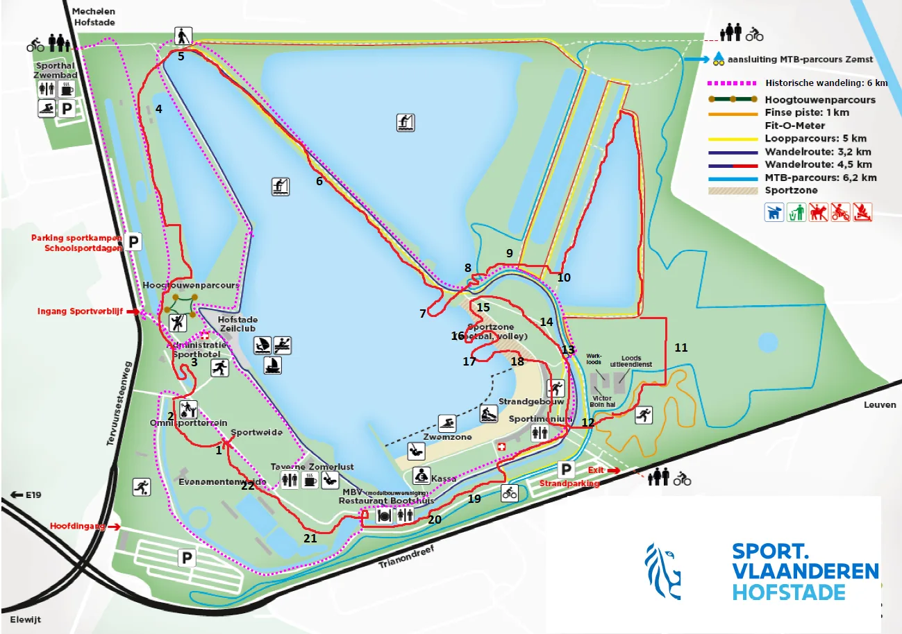
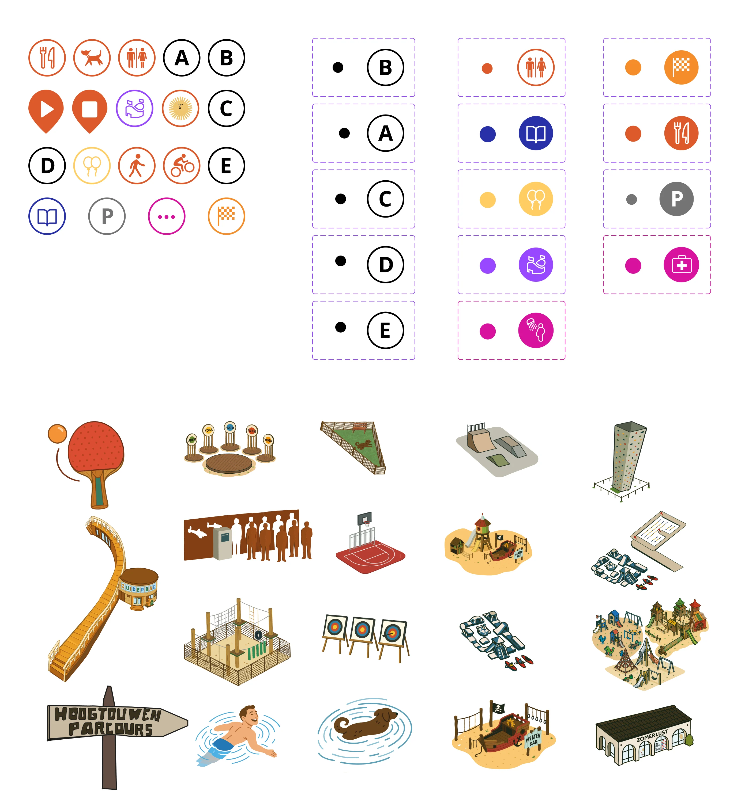
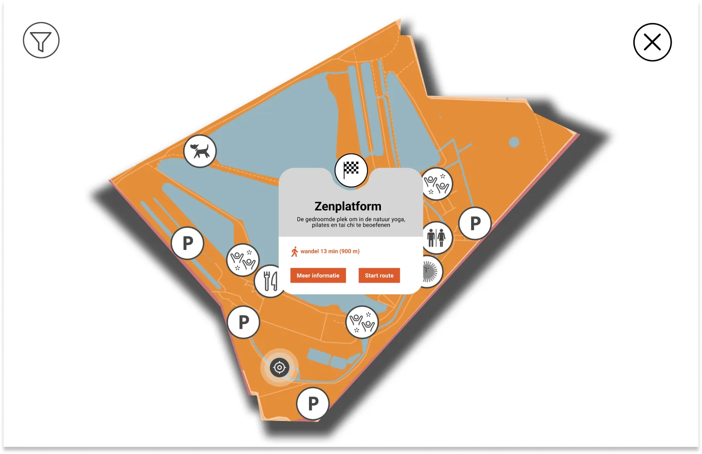
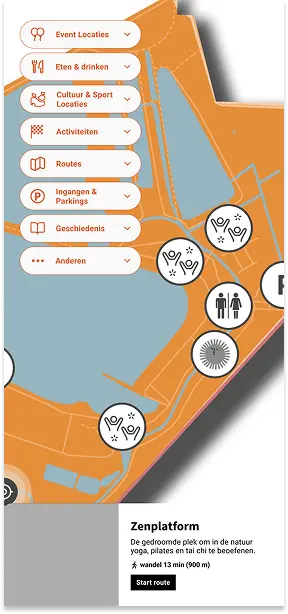
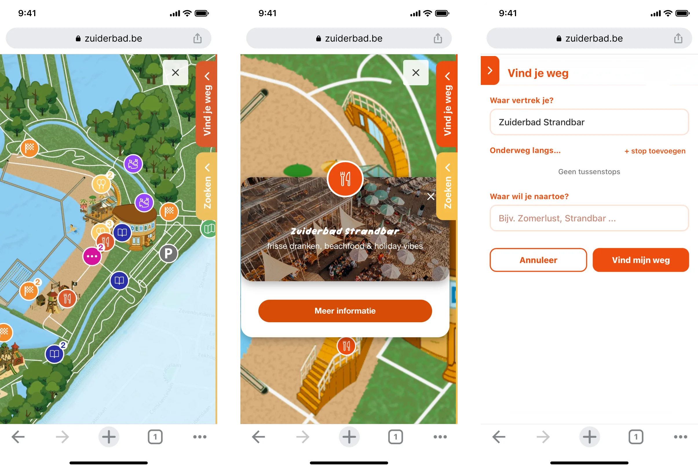
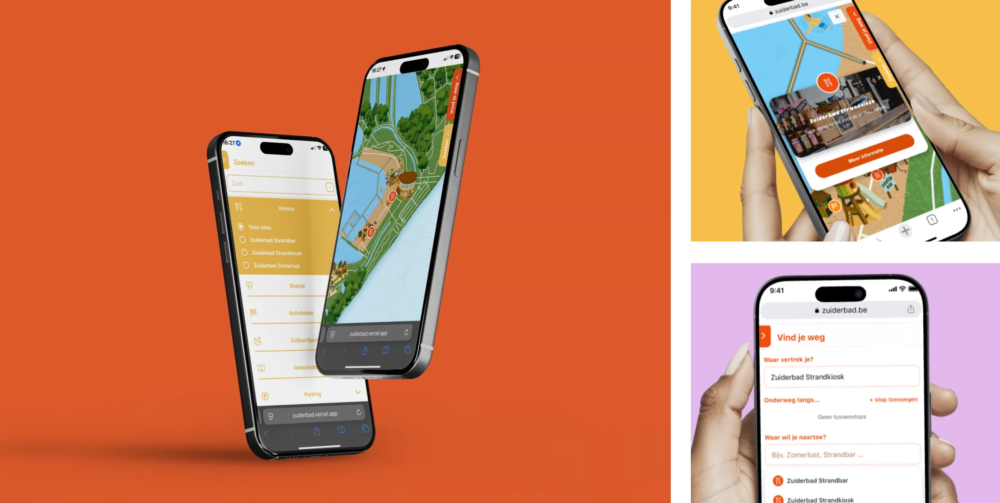

01
Interactive Navigation & Wayfinding
Easily discover attractions, restaurants, events, parking areas, and other key locations through interactive map markers with useful information and details.

Zuiderbad
An interactive map for Zuiderbad in Hofstade that helps visitors explore the park in an intuitive and playful way. The platform combines route planning, smart filters, location pop-ups and responsive design to help visitors quickly find restaurants, activities, parking areas and event locations. The visual style follows Zuiderbad's playful branding through custom icons, illustrations and a clear mobile-first interface.
Hofstade covers a large area with restaurants, playgrounds, sports facilities, walking routes and event locations spread across the domain. Visitors often relied on Google Maps, static signage and PDF plans, which made it difficult to understand what was available and how to get there. The challenge wasn't simply navigation. Visitors first needed help discovering what the park had to offer before deciding where to go.

We started with stakeholder interviews, competitor analysis and an on-site visit of the Hofstade domain.
Walking through the park revealed several moments where visitors could easily lose orientation, especially around larger activity zones. We also observed that visitors were constantly switching between different sources of information to answer simple questions such as:
"Where is the restaurant located?"
"How do I get to the playground?"
"Where is the nearest parking?"
Research revealed that visitors weren't primarily looking for directions. They first needed help discovering what the domain had to offer before deciding where to go.
This insight shifted the project from a traditional navigation tool towards a combined exploration and wayfinding experience. The map became the central interface, allowing visitors to discover attractions, access information and start routes from a single location.
Based on our research findings, we designed a mobile-first platform that combines discovery, navigation and visitor information into a single experience.
Easily discover attractions, restaurants, events, parking areas, and other key locations through interactive map markers with useful information and details.
Walking and cycling routes tailored to different visitor types, with filters for distance, accessibility, and points of interest.
Quickly discover restaurants, toilets, parking areas, accessibility features, sports facilities, event venues, attractions, and supplier entrances.
Live "You Are Here" functionality to help visitors navigate and orient themselves throughout the park.
Traditional navigation tools often feel functional but impersonal. To create a more engaging experience, we adopted an illustrated visual style inspired by theme parks, helping visitors recognize landmarks more easily while reinforcing Zuiderbad's playful identity.



We explored how visitors could use the map in the most intuitive way, with a focus on reducing friction and helping users find information in as few clicks as possible.
Early wireframes focused on reducing the number of interactions required to access information. The final structure allowed visitors to access routes, filters and location details directly from the map view without navigating through multiple screens.
The final platform transformed a fragmented visitor experience into a single digital solution. Instead of switching between Google Maps, static park maps and separate information sources, visitors can now discover locations, plan routes and navigate the domain through one intuitive interface. By combining exploration, wayfinding and practical visitor information, the platform makes the Hofstade domain easier to understand and more enjoyable to explore.


Back to projects overview
Back
Next
Ecopick